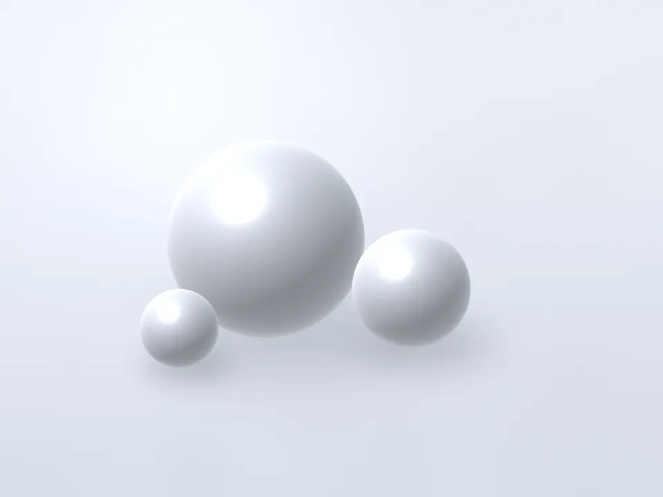

納得してから、はじめる肌治療。
当院の考え方
美容皮膚科の治療は、
受けると決めるまでの時間が、
いちばん大切だと考えています。
肌の悩みは、同じように見えても原因が異なります。白磁スキンクリニックでは、皮膚科の診察で原因を見きわめたうえで、治療の選択肢と、それぞれの費用・回数・リスクを並べてご説明します。決めていただくのは、説明を聞き終えたあとで構いません。
-
説明
見積書には総額を記載し、起こりうる副作用は、頻度の低いものまでお伝えします。施術を受けてみないとわからないことは、わからないと正直に申し上げます。
-
選択
施術をしないという選択肢も含めてご提案します。カウンセリング当日に契約をお願いすることはありません。持ち帰って、ご家族と相談していただけます。
-
継続
施術後の経過は、医師が診察で確認します。肌の反応に合わせて間隔や出力を見直し、気になることがあれば、施術の予定がない日でもご相談いただけます。
悩みから探す
悩みごとに、対応する施術をまとめました。同じ悩みでも原因によって適した治療は異なるため、最終的な治療法は診察で決めます。
悩みから絞り込む
-

IPL光治療
顔全体のシミ・そばかす、くすみ、赤みに。
- 料金
- 全顔 1回 22,000円（税込）
- ダウンタイム
- 赤み 数時間〜1日程度
- 主なリスク
- 赤み・ほてり、一時的にシミが濃く見える、まれにやけど・色素沈着
-

ケミカルピーリング
ニキビ・毛穴の詰まり、肌のざらつきに。
- 料金
- 全顔 1回 8,800円（税込）
- ダウンタイム
- 赤み・乾燥 数日程度
- 主なリスク
- 赤み・ヒリヒリ感、乾燥、皮むけ、まれにかぶれ・色素沈着
-

HIFU（高密度焦点式超音波）
フェイスライン・頬のたるみに。
- 料金
- 全顔 1回 55,000円（税込）
- ダウンタイム
- 赤み・むくみ 数時間〜数日
- 主なリスク
- 赤み・腫れ、一時的なしびれ、内出血、まれにやけど
-
ヒアルロン酸注入
ほうれい線・くぼみのボリュームに。
- 料金
- 0.5mL 49,500円（税込）
- ダウンタイム
- 腫れ・内出血 数日〜2週間
- 主なリスク
- 内出血・腫れ、しこり、感染、まれに血管塞栓による皮膚の壊死・視力障害
-

-
すべての施術と料金
施術ごとの回数の目安・ダウンタイム・リスクを一覧で比べられます。
料金の考え方
表示している料金は、
すべて税込の総額です。
施術料には、施術当日の診察や、施術前後の洗顔・冷却・保湿を含みます。初診料や麻酔など、別にかかる費用も料金表にすべて掲載しています。施術の前には見積書をお渡しし、ご了承いただいてから施術を始めます。
施術料に含まれるもの
- 施術当日の診察
- 施術前の洗顔・メイク落とし
- 施術後の冷却・保湿・日焼け止め
- 施術が原因と医師が判断した肌トラブルの診察・お薬
別にかかる費用
- 初診料 3,300円（税込）
- 再診料 1,100円（税込）
- 麻酔クリーム（1部位） 3,300円（税込）
- 処方薬（必要な場合のみ）
医師紹介

「何をどこまで聞いてよいのかわからない」という声から、当院の説明のかたちが生まれました。
院長／皮膚科専門医
汐見 透子
大学病院と総合病院の皮膚科で、湿疹やアトピー性皮膚炎、皮膚腫瘍などの診療に長く携わってきました。美容皮膚科の施術も、皮膚科の診断の延長にあると考えています。治療を急がせることなく、納得していただけるまでご説明します。
院長のプロフィールを見るはじめての方へ
ご予約から施術後のケアまでの流れです。初診の日は、問診票のご記入からカウンセリング、診察までで30〜45分ほどかかります。
-
ご予約
Webフォームは24時間受け付けています。お電話でのご予約は、診療時間内にお願いします。
-
カウンセリング
気になる症状や、これまでの治療歴を伺います。施術ごとの費用・回数・リスクをご説明します。
-
診察
医師が肌の状態を診察し、施術を受けられるかどうかを判断します。見積書をお渡しします。
-
施術
ご納得いただけた場合にのみ、施術を行います。同じ日に受けるか、別の日に予約するかを選べます。
-
アフターケア
施術後の注意点を書面でお渡しします。経過は再診で確認し、気になる症状があればご連絡ください。
お知らせ
-
休診
10月12日（月・祝）は休診いたします。13日（火）は通常どおり診療します。
-
お知らせ
各施術ページの料金とリスク・副作用の記載を見直しました（最終確認日：2026年9月30日）。
-
休診
年末年始は、12月29日（火）から1月3日（日）まで休診いたします。
-
お知らせ
Web予約フォームで、第2希望日を選べるようになりました。
-
診療
紫外線の強い時期に施術を受ける方へ、日焼け対策をまとめた資料を受付でお渡ししています。
診療時間・アクセス
最終受付 30 分前
受付時間のご案内
最終受付は、診療終了の30分前です。
曜日ごとの診療時間は、診療時間の表をご覧ください。
| 曜日 | 診療時間 | 最終受付 |
|---|---|---|
| 月曜日 | 〜 | |
| 火曜日 | 〜 | |
| 水曜日 | 〜 | |
| 木曜日 | 休診 | |
| 金曜日 | 〜 | |
| 土曜日 | 〜 | |
| 日曜日 | 〜 | |
| 祝日 | 休診 | |
- 東京メトロ「表参道」駅 A4出口から徒歩4分
- 東京メトロ「外苑前」駅 1a出口から徒歩8分
ご予約・ご相談
カウンセリングの日に、施術を受けるかどうかを
決める必要はありません。
費用とリスクを確かめてから、ゆっくりご検討ください。